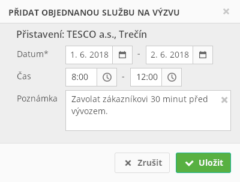

Stručný popis
Modální okno s formulářem pro přidání Objednané služby na výzvu.
Na vstupu formuláře jsou získána následující informace:
- Objednaný úkon, pro který mají být vytvořeny Objednané služby.
Na výstupu formuláře jsou předány následující informace:
- Datum od – časové okno realizace.
- Datum do – časové okno realizace.
- Čas od – časové okno realizace.
- Čas do – časové okno realizace.
- Poznámka k vytvořené Objednané služby na výzvu.
Uživatelské rozhraní
Drátový diagram

Přehled UI komponent
| Callout | Komponenta | Nadpis | Typ komponenty | Příklad hodnoty | Hodnota | Výchozí hodnota | Formát | Zpřístupněná | Viditelná | Chování | Validace | Poznámka |
|---|---|---|---|---|---|---|---|---|---|---|---|---|
| 1 | Nadpis | – | Label | Přistavení: TESCO a.s., Trenčín | Entita Objednaný úkon. | – | – | Vždy | – | – | – | |
| 2 | Datum od | Datum* | DatePicker | 4. 6. 2018 | – | Dnešní datum | Vždy | Vždy | Po nastavení Datum od, pokud je Datum do rovno NULL, nebo Datum do < Datum od, se Datum do nastaví na Datum od. | Větší nebo rovno dnešní datum. | – | |
| 3 | Datum do | – | DatePicker | 16. 12. 2018 | – | – | Vždy | Vždy | – | Větší nebo rovno Datum od. | – | |
| 4 | Čas od | Čas | TimePicker | 8:00 | – | – | Vždy | Vždy | Po nastavení Čas od, pokud je Čas do roven NULL, nebo Čas do < Čas od, se Čas do nastaví na Čas od. | Může být NULL. | – | |
| 5 | Čas do | – | TimePicker | 15:05 | – | – | Vždy | Vždy | – | Pokud je Čas od roven NULL:
Jinak:
| – | |
| 6 | Poznámka | Poznámka | MultilineTextBox | Zavolat zákazníkovi 30 minut před vývozem. | – | – | – | Vždy | Vždy | – | Maximálně 255 znaků. | – |
Grafický návrh
